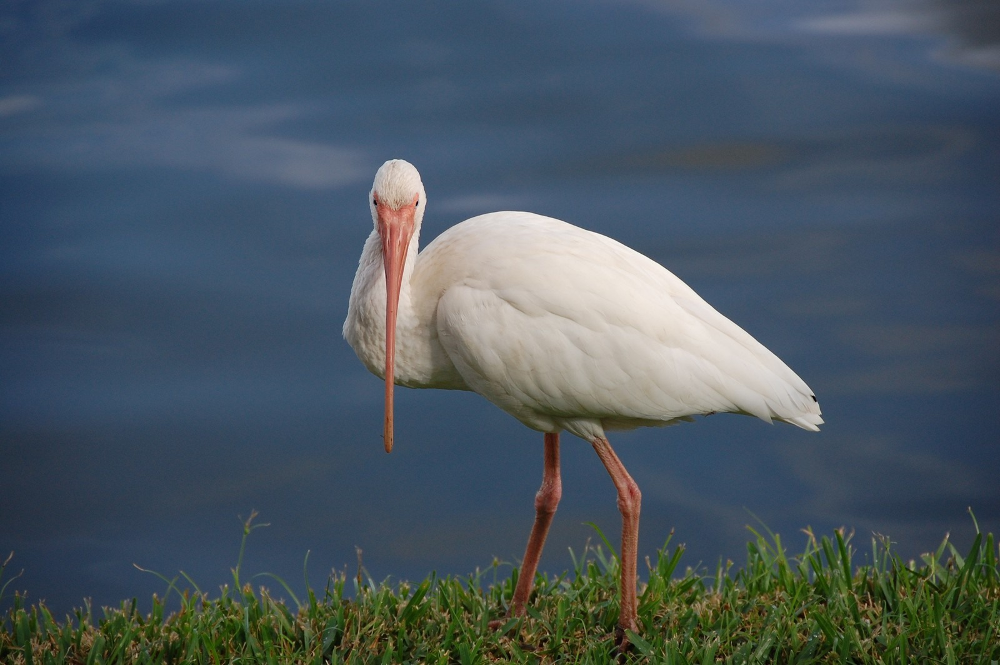
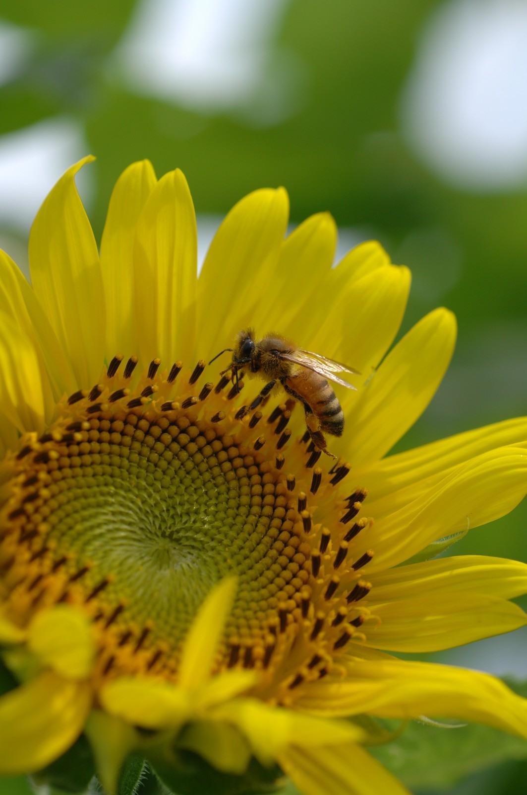
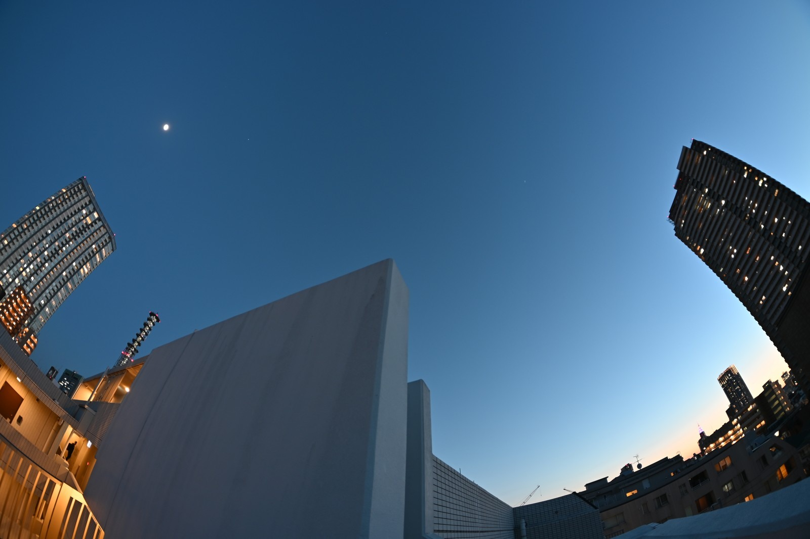
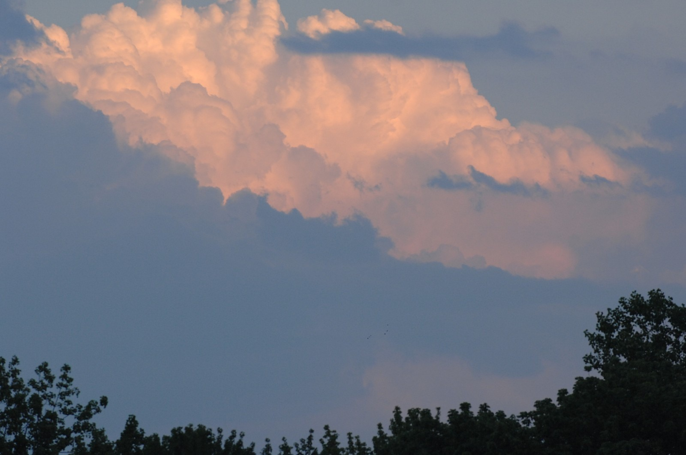
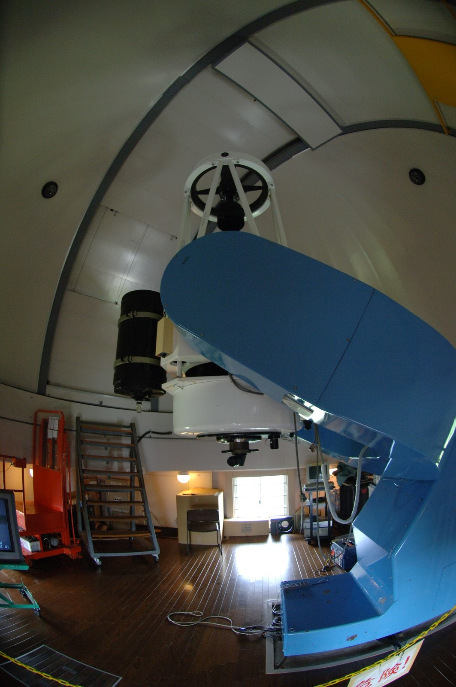
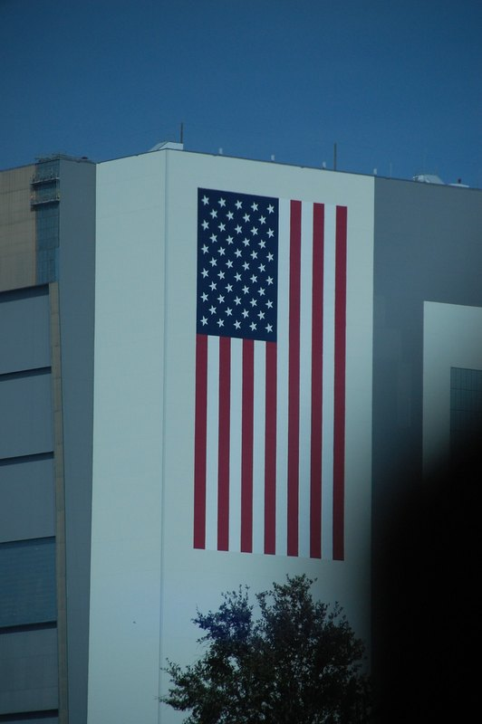

HIROSHI KOYAMA / PHOTOGRAPHS
小山 洋写真ポートフォリオ
鳥の姿、花と虫、空の光、街の形。身近な自然から観測の現場まで、小山 洋が撮影した作品を紹介します。
Selected photographs / 2006–2026
代表作品
01 — SELECTED PHOTOGRAPHS

水辺の白い鳥
01 / 08Nature · 2008
撮影データ
2008-11-15 · NIKON D40 · 1/800 s · F5.6 · ISO 400 · 200 mm


ひまわりと蜂
02 / 08Nature · 2006
撮影データ
2006-07-22 · NIKON D2X · 1/750 s · F6.3 · ISO 200 · 60 mm


街と夕空
03 / 08Light & sky · 2026
撮影データ
2026-02-28 · NIKON Z 50 · 1/2 s · ISO 100


夕日に染まる雲
04 / 08Light & sky · 2008
撮影データ
2008-08-07 · NIKON D2X · 1/400 s · F5.6 · ISO 640 · 200 mm

星条旗のある街角
05 / 08Streets & architecture · 2008
撮影データ
2008-04-19 · NIKON D2X · 1/320 s · F5.3 · ISO 200 · 120 mm

地下に広がる幾何学
06 / 08Streets & architecture · 2008
撮影データ
2008-10-19 · NIKON D2X · 1/3 s · F7.1 · ISO 800 · 10.5 mm


観測の現場
07 / 08Science · 2006
撮影データ
2006-07-22 · NIKON D2X · 1/80 s · F2.8 · ISO 800 · 10.5 mm

ワシントン記念塔
08 / 08Light & sky · 2008
撮影データ
2008-10-29 · NIKON D40 · 1/3 s · F5 · ISO 1600 · 22 mm
シリーズ
02 — COLLECTIONS
AMERICA / 2007–2008
アメリカの風景
ワシントンD.C.からフロリダへ。街角、建物、海辺をまとめた写真集。
写真集を見る ↗小山 洋のポートフォリオ
記事・エッセイ、教材・研究、本も紹介しています。